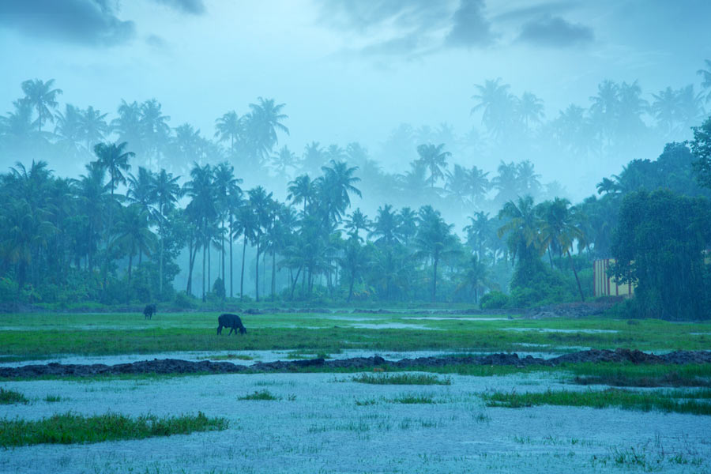
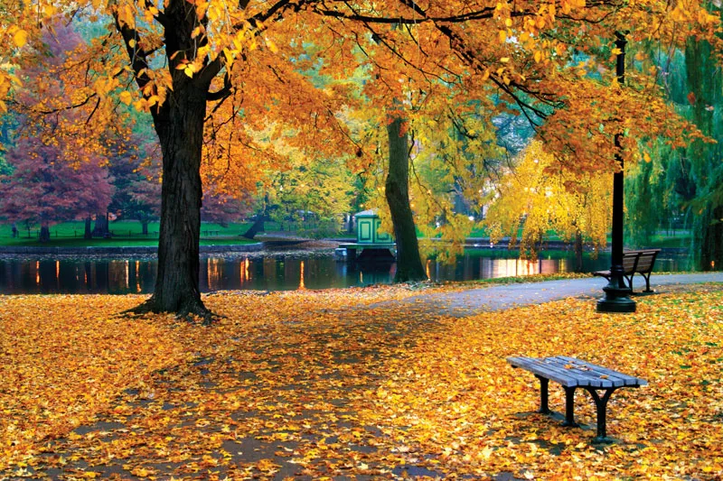
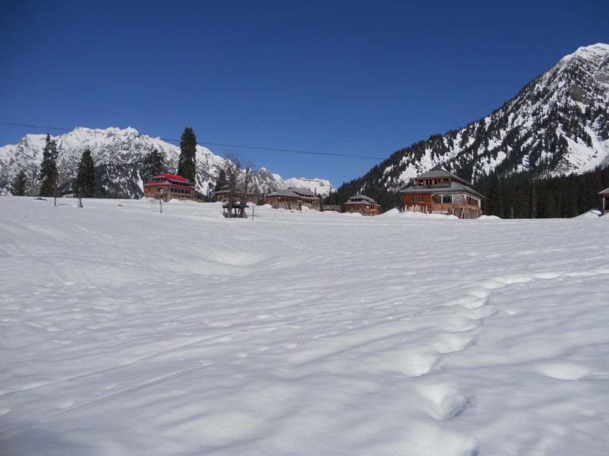
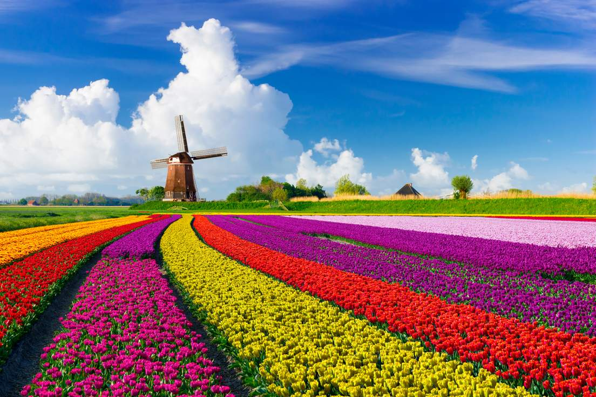

Summer
Summer is the hottest season, typically lasting from June to August in most regions. It brings long, sunny days, higher temperatures, and outdoor activities like swimming and vacations.

Monsoon
Monsoon is a season characterized by heavy rainfall, typically occurring from June to September in many tropical regions. It is caused by seasonal wind patterns, bringing moisture from oceans to land. Monsoons are essential for agriculture

Autumn
Autumn, also known as fall, is the season between summer and winter, typically from September to November. It is marked by cooler temperatures, shorter days, and the vibrant transformation of leaves from green to red, orange, and yellow. This season is also associated with harvest festivals and preparing for the cold winter months.

Winter
Winter is the coldest season, usually lasting from December to February in most regions. It brings shorter days, chilly temperatures, and snowfall in many areas. People often enjoy activities like skiing, ice skating, and cozy indoor gatherings.
